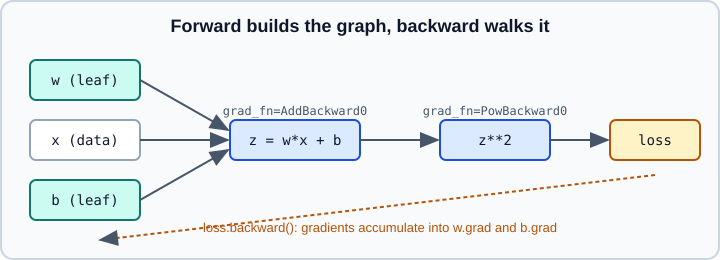

Autograd Fundamentals
|
This content was generated with the assistance of AI and should be verified against the official documentation before being relied on in production. |
Autograd is PyTorch’s automatic differentiation engine. As you run ordinary tensor code, it records the operations on tensors that require gradients and, when you call backward(), applies the chain rule in reverse to fill in the gradients that optimizers use. This page covers the mechanics a PyTorch user needs daily. The mathematics of reverse-mode differentiation is on Backpropagation and Automatic Differentiation; turning gradients off is on no_grad, inference_mode and Grad Modes; custom backward rules are on Custom autograd Functions; and higher-order derivatives are on Higher-Order Gradients and torch.func.
It targets Python 3.13 and PyTorch 2.15. Examples were run on Python 3.13 with PyTorch 2.15 (CPU) on 2026-10-31. Comments show the printed results.
The computation graph

Each operation whose inputs include a tensor with requires_grad=True produces an output with a grad_fn, the node that knows how to compute the backward step. The result is a directed acyclic graph: inputs are leaves and outputs are roots. The graph is rebuilt from scratch on every forward pass, which is why ordinary Python control flow (loops, if, varying shapes) works.
import torch
x = torch.tensor([1.0, 2.0, 3.0]) # data: does not require grad
w = torch.tensor([0.5, -1.0, 2.0], requires_grad=True)
b = torch.tensor(0.1, requires_grad=True)
z = (w * x).sum() + b # non-leaf, has grad_fn
loss = z ** 2
print(z.grad_fn, loss.grad_fn) # <AddBackward0 ...> <PowBackward0 ...>
loss.backward()
print(w.grad) # 2 * z * x
print(b.grad) # 2 * zHere \(z = 0.5 - 2 + 6 + 0.1 = 4.6\), so b.grad is \(2z = 9.2\) and w.grad is tensor([9.2, 18.4, 27.6]).
requires_grad, leaf and non-leaf tensors
-
requires_gradisFalseby default for ordinary tensors andTruefornn.Parameter. Set it at creation or later withx.requires_grad_(True). Only floating-point and complex tensors can require gradients. -
A leaf tensor has no
grad_fn: it was created by the user (or is a parameter) rather than by an operation. A non-leaf tensor is the result of an operation on tensors that require gradients and automatically hasrequires_grad=True. Settingrequires_gradonly makes sense for leaves. -
An operation is recorded only if at least one input requires grad. Otherwise the output is a plain tensor with no history.
-
backward()accumulates gradients into.gradonly for leaf tensors withrequires_grad=True. Reading.gradon a non-leaf returnsNone(with a warning); cally.retain_grad()beforebackward()to keep it. -
nn.Module.requires_grad_(False)freezes all parameters of a module, the basis of transfer learning (see Transfer Learning and Fine-Tuning).
a = torch.ones(3, requires_grad=True)
b = a * 2
c = b.sum()
b.retain_grad()
c.backward()
print(a.is_leaf, b.is_leaf) # True False
print(a.grad) # tensor([2., 2., 2.])
print(b.grad) # tensor([1., 1., 1.]) because retain_grad was calledThe docs do not elaborate on retain_grad in the autograd notes; its behaviour is documented on the Tensor.retain_grad page.
backward, scalars and vector-Jacobian products
backward() without arguments requires a scalar output (it implicitly uses a gradient of 1). For a non-scalar output, autograd computes a vector-Jacobian product \(v^\top J\), so you must pass v, a tensor with the output’s shape:
x = torch.tensor([1.0, 2.0, 3.0], requires_grad=True)
y = x ** 2 # non-scalar
y.backward(torch.ones_like(y)) # v = ones: sums the rows of the Jacobian
print(x.grad) # tensor([2., 4., 6.])
try:
(x ** 2).backward() # RuntimeError: grad can be implicitly created only for scalar outputs
except RuntimeError as err:
print("needs a scalar or an explicit gradient")For full Jacobians use torch.autograd.functional.jacobian or torch.func (see the higher-order page).
Accumulation, zeroing and retain_graph
Gradients accumulate: each backward() adds to .grad. That is a feature (gradient accumulation across micro-batches) and a classic bug (forgetting to clear gradients between iterations).
w = torch.ones(2, requires_grad=True)
for _ in range(2):
(w * 3).sum().backward()
print(w.grad) # tensor([6., 6.]) -- accumulated twice
w.grad = None # or w.grad.zero_(); optimizers expose zero_grad()
(w * 3).sum().backward()
print(w.grad) # tensor([3., 3.])
loss = (w * w).sum()
loss.backward(retain_graph=True)
loss.backward() # second pass allowed only because of retain_graphBy default backward() frees the saved intermediate tensors, so a second backward through the same graph raises an error that suggests retain_graph=True. Use it only when you truly need two passes, because it keeps memory alive. In a training loop, call optimizer.zero_grad() each step; in recent PyTorch versions it defaults to set_to_none=True, which sets .grad to None instead of filling zeros (this default is documented on the torch.optim.Optimizer.zero_grad page, see Optimizers). The full loop is in The Training Loop and Evaluation.
torch.autograd.grad
torch.autograd.grad(outputs, inputs, grad_outputs=None, retain_graph=None, create_graph=False) returns the gradients instead of accumulating them into .grad, which avoids side effects and works for arbitrary inputs, not just leaves. create_graph=True records the backward computation so you can differentiate again.
x = torch.tensor(3.0, requires_grad=True)
y = x ** 3
(g1,) = torch.autograd.grad(y, x, create_graph=True) # 3 x^2 = 27
(g2,) = torch.autograd.grad(g1, x) # 6 x = 18
print(g1.item(), g2.item(), x.grad) # 27.0 18.0 NoneThe autograd notes also recommend torch.autograd.grad over backward() to avoid non-determinism when several threads call backward on shared parameters.
detach and stopping gradients
x.detach() returns a tensor that shares data with x but is cut from the graph; torch.no_grad() stops recording inside a block. Typical uses are logging a loss (loss.item() or loss.detach()), treating a target network’s output as constant, and freezing parts of a model.
w = torch.ones(2, requires_grad=True)
target = (w * 2).detach() # constant: no gradient flows through it
loss = ((w * 3 - target) ** 2).sum()
loss.backward()
print(w.grad)
with torch.no_grad():
w -= 0.1 * w.grad # in-place update of a leaf is allowed under no_gradDetached tensors share storage, so in-place edits of one change the other, and autograd’s version counter may then complain.
In-place operations and version counters
Every tensor has a version counter that increments on in-place modification. Tensors saved for backward remember the version they were saved at; if they were modified in between, backward() raises an error ("one of the variables needed for gradient computation has been modified by an inplace operation") rather than returning wrong gradients. In-place modification of a leaf that requires grad (outside no_grad) is an error. The notes generally discourage in-place operations in code that needs gradients; they save little memory in practice because autograd often needs the original values anyway.
Non-differentiable points
Gradients are defined by ordered rules: the true gradient if it exists, then a minimum-norm subgradient for convex functions, then a supergradient for concave ones, then a continuous extension; undefined points may yield arbitrary values, usually NaN. A frequent cause of NaN gradients is masking after a division by zero: the forward value is fine but the backward still produces NaN, so mask the inputs before dividing (the autograd notes describe this case).
x = torch.tensor([0.0, 1.0], requires_grad=True)
bad = torch.where(x > 0, 1.0 / x, torch.zeros_like(x)).sum()
bad.backward()
print(x.grad) # contains nan at index 0
x.grad = None
safe_x = torch.where(x > 0, x, torch.ones_like(x)) # mask inputs first
good = torch.where(x > 0, 1.0 / safe_x, torch.zeros_like(x)).sum()
good.backward()
print(x.grad) # tensor([0., -1.])Hooks
tensor.register_hook(fn) runs fn(grad) when the tensor’s gradient is computed and may return a replacement gradient, which is useful for gradient clipping or inspection. register_post_accumulate_grad_hook runs after .grad has been updated and exists only for leaf tensors. Module-level hooks are described on nn.Module. Hook ordering (tensor hooks, node pre-hooks, retained .grad update, node execution, post-accumulate hooks, node post-hooks) is specified in the autograd notes.
w = torch.ones(3, requires_grad=True)
w.register_hook(lambda g: g.clamp(-1, 1)) # clip the incoming gradient
(w * 10).sum().backward()
print(w.grad) # tensor([1., 1., 1.])Common mistakes
-
Calling
.numpy()or.item()on tensors in the training path and keeping them in the graph (storinglossinstead ofloss.item()leaks memory because the graph stays alive). -
Forgetting to zero gradients, or zeroing them between
backward()andstep(). -
Reading
.gradof a non-leaf withoutretain_grad. -
Mixing double and float tensors, which breaks gradient dtype matching.
Memory costs of the saved graph and how to reduce them are in GPU Memory and Activation Checkpointing.